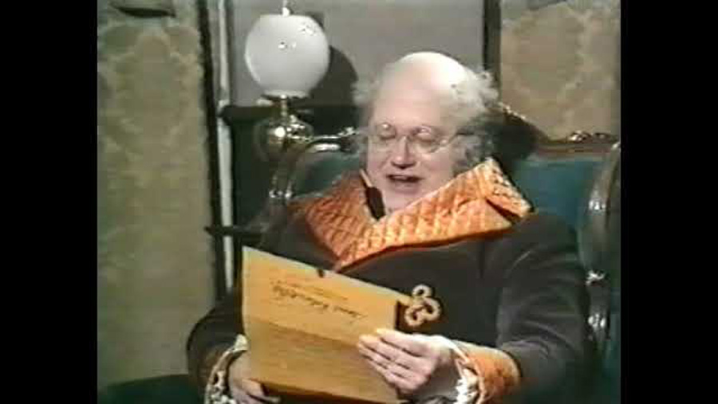

| Character | Actor |
|---|---|
| Samuel Pickwick | Harry Secombe |
| Nathaniel Winkle | Ian Trigger |
| Alfred Jingle | Aubrey Woods |
| Mrs. Bardell | Hattie Jacques |
| Serjeant Buzfuz | Bill Fraser |
| Sam Weller | Roy Castle |
| Rachel Wardle | Joyce Grant |
| Tracy Tupman | Robert Dorning |
| Augustus Snodgrass | Julian Orchard |
| Emily Wardle | Cheryl Kennedy |
| Isabella Wardle | Julia Sutton |
| Landlord | Gertan Klauber |
| Joe, the Fat Boy | Robert Yetzes |
| Mr. Wardle | Michael Logan |
| Bardell Jr. | Christopher Reynalds |
| Mary | Sheila White |
| Judge | Erik Chitty |
| Dodson | Michael Darbyshire |
| Roker | Michael Balfour |
| Fogg | Tony Sympson |
| Serjeant Snubbin | Ian Gray |
| Foreman | Gertan Klauber |
| Role | Person |
|---|---|
| Director | Terry Hughes |
| Screenplay | James Gilbert |
In 1969 the BBC made Pickwick, a TV movie of the musical starring Harry Secombe as Mr. Pickwick, and with Roy Castle as Sam Weller.